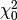
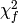
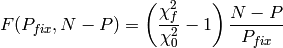
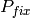

Calculation of confidence intervals¶
Since version 0.5, lmfit is also capable of calculating the confidence intervals directly. For most models, it is not necessary: the estimation of the standard error from the estimated covariance matrix is normally quite good.
But for some models, e.g. a sum of two exponentials, the approximation begins to fail. For this case, lmfit has the function conf_interval() to calculate confidence intervals directly. This is substantially slower than using the errors estimated from the covariance matrix, but the results are more robust.
Method used for calculating confidence intervals¶
The F-test is used to compare our null model, which is the best fit we have found, with an alternate model, where one of the parameters is fixed to a specific value. The value is changed until the difference between  and  can't be explained by the loss of a degree of freedom within a certain confidence.

N is the number of data-points, P the number of parameter of the null model.  is the number of fixed parameters (or to be more clear, the difference of number of parameters between our null model and the alternate model).
A log-likelihood method will be added soon.
A basic example¶
First we create a toy problem:
In [1]: import lmfit
In [2]: import numpy as np
In [3]: x = np.linspace(0.3,10,100)
In [4]: y = 1/(0.1*x)+2+0.1*np.random.randn(x.size)
In [5]: p = lmfit.Parameters()
In [6]: p.add_many(('a',0.1),('b',1))
In [7]: def residual(p):
...: a = p['a'].value
...: b = p['b'].value
...: return 1/(a*x)+b-y
...:
We have to fit it, before we can generate the confidence intervals.
In [8]: mi = lmfit.minimize(residual, p)
(' _set_params ', True, Parameters([('a', <Parameter 'a', 0.1, bounds=[None:None]>), ('b', <Parameter 'b', 1, bounds=[None:None]>)]))
A
D
Before [0.1, 1]
After [0.1, 1] <type 'list'>
After [ 0.0999186 1.98957831]
In [9]: mi.leastsq()
Before [0.099918600947856609, 1.9895783083874108]
After [0.099918600947856609, 1.9895783083874108] <type 'list'>
After [ 0.0999186 1.98957831]
Out[9]: True
In [10]: lmfit.printfuncs.report_fit(mi.params)
[[Variables]]
a: 0.0999186 +/- 0.0001976605 (0.20%) initial = 0.0999186
b: 1.989578 +/- 0.0123883 (0.62%) initial = 1.989578
[[Correlations]] (unreported correlations are < 0.100)
C(a, b) = 0.601
Now it just a simple function call to start the calculation:
In [11]: ci = lmfit.conf_interval(mi)
(' _set_params ', True, Parameters([('a', <Parameter 'a', value=0.099918600947856609 (fixed), bounds=[-inf:inf]>), ('b', <Parameter 'b', value=1.9895783380344378 +/- 0.0124, bounds=[-inf:inf]>)]))
A
D
(' _set_params ', False, <Parameter 'a', value=0.099720940403733402 (fixed), bounds=[-inf:inf]>)
C
---------------------------------------------------------------------------
MinimizerException Traceback (most recent call last)
<ipython-input-11-283bc3409ed1> in <module>()
----> 1 ci = lmfit.conf_interval(mi)
/Library/Frameworks/Python.framework/Versions/2.7/lib/python2.7/site-packages/lmfit-0.7.3-py2.7.egg/lmfit/confidence.pyc in conf_interval(minimizer, p_names, sigmas, trace, maxiter, verbose, prob_func)
110 ci = ConfidenceInterval(minimizer, p_names, prob_func, sigmas, trace,
111 verbose, maxiter)
--> 112 output = ci.calc_all_ci()
113 if trace:
114 return output, ci.trace_dict
/Library/Frameworks/Python.framework/Versions/2.7/lib/python2.7/site-packages/lmfit-0.7.3-py2.7.egg/lmfit/confidence.pyc in calc_all_ci(self)
182 for p in self.p_names:
183 out[p] = (self.calc_ci(p, -1)[::-1] +
--> 184 [(0., self.params[p].value)] +
185 self.calc_ci(p, 1))
186 if self.trace:
/Library/Frameworks/Python.framework/Versions/2.7/lib/python2.7/site-packages/lmfit-0.7.3-py2.7.egg/lmfit/confidence.pyc in calc_ci(self, para, direction)
204 para.vary = False
205 self.minimizer.prepare_fit(self.params)
--> 206 limit = self.find_limit(para, direction)
207 start_val = para.value
208 a_limit = start_val
/Library/Frameworks/Python.framework/Versions/2.7/lib/python2.7/site-packages/lmfit-0.7.3-py2.7.egg/lmfit/confidence.pyc in find_limit(self, para, direction)
249 i += 1
250 limit += step * direction
--> 251 new_prob = self.calc_prob(para, limit)
252 change = new_prob - old_prob
253 old_prob = new_prob
/Library/Frameworks/Python.framework/Versions/2.7/lib/python2.7/site-packages/lmfit-0.7.3-py2.7.egg/lmfit/confidence.pyc in calc_prob(self, para, val, offset, restore)
262 restore_vals(self.org, self.minimizer.params)
263 para.value = val
--> 264 self.minimizer.prepare_fit(para)
265 self.minimizer.leastsq()
266 out = self.minimizer
/Library/Frameworks/Python.framework/Versions/2.7/lib/python2.7/site-packages/lmfit-0.7.3-py2.7.egg/lmfit/minimizer.pyc in prepare_fit(self, params)
237 return
238 if params is not None:
--> 239 self.__set_params(params)
240 self.nfev = 0
241 self.var_map = []
/Library/Frameworks/Python.framework/Versions/2.7/lib/python2.7/site-packages/lmfit-0.7.3-py2.7.egg/lmfit/minimizer.pyc in __set_params(self, params)
217 else:
218 print(" C")
--> 219 raise MinimizerException(self.err_nonparam)
220 print(" D")
221
MinimizerException:
params must be a list of Parameter()s or instance of Parameters()
In [12]: lmfit.printfuncs.report_ci(ci)
---------------------------------------------------------------------------
NameError Traceback (most recent call last)
<ipython-input-12-109e8590aa63> in <module>()
----> 1 lmfit.printfuncs.report_ci(ci)
NameError: name 'ci' is not defined
As we can see, the estimated error is almost the same: it is not necessary to calculate ci's for this problem.
An advanced example¶
Now we look at a problem, where calculating the error from approximated covariance can lead to wrong results:
In [14]: y = 3*np.exp(-x/2.)-5*np.exp(-x/10.)+0.2*np.random.randn(x.size)
In [15]: p = lmfit.Parameters()
In [16]: p.add_many(('a1', 5), ('a2', -5), ('t1', 2), ('t2', 5))
In [17]: def residual(p):
....: a1, a2, t1, t2 = [i.value for i in p.values()]
....: return a1*np.exp(-x/t1)+a2*np.exp(-x/t2)-y
....:
Now lets fit it:
In [18]: mi = lmfit.minimize(residual, p)
(' _set_params ', True, Parameters([('a1', <Parameter 'a1', 5, bounds=[None:None]>), ('a2', <Parameter 'a2', -5, bounds=[None:None]>), ('t1', <Parameter 't1', 2, bounds=[None:None]>), ('t2', <Parameter 't2', 5, bounds=[None:None]>)]))
A
D
Before [5, -5, 2, 5]
After [5, -5, 2, 5] <type 'list'>
After [ 2.61101347 -4.51292759 1.56947733 10.96136643]
In [19]: mi.leastsq()
Before [2.611013468631163, -4.5129275905744413, 1.5694773304740601, 10.961366426022575]
After [2.611013468631163, -4.5129275905744413, 1.5694773304740601, 10.961366426022575] <type 'list'>
After [ 2.61101347 -4.51292759 1.56947733 10.96136643]
Out[19]: True
In [20]: lmfit.printfuncs.report_fit(mi.params, show_correl=False)
[[Variables]]
a1: 2.611013 +/- 0.3279648 (12.56%) initial = 2.611013
a2: -4.512928 +/- 0.3991997 (8.85%) initial = -4.512928
t1: 1.569477 +/- 0.3345078 (21.31%) initial = 1.569477
t2: 10.96137 +/- 1.263874 (11.53%) initial = 10.96137
Again we call conf_interval(), this time with tracing and only for 1- and 2-sigma:
In [21]: ci, trace = lmfit.conf_interval(mi, sigmas=[0.68,0.95], trace=True, verbose=False)
(' _set_params ', True, Parameters([('a1', <Parameter 'a1', value=2.611013468631163 (fixed), bounds=[-inf:inf]>), ('a2', <Parameter 'a2', value=-4.5129275905744413 +/- 0.399, bounds=[-inf:inf]>), ('t1', <Parameter 't1', value=1.5694773304740601 +/- 0.335, bounds=[-inf:inf]>), ('t2', <Parameter 't2', value=10.961366589359663 +/- 1.26, bounds=[-inf:inf]>)]))
A
D
(' _set_params ', False, <Parameter 'a1', value=2.2830487128691401 (fixed), bounds=[-inf:inf]>)
C
---------------------------------------------------------------------------
MinimizerException Traceback (most recent call last)
<ipython-input-21-ffc48cd474ab> in <module>()
----> 1 ci, trace = lmfit.conf_interval(mi, sigmas=[0.68,0.95], trace=True, verbose=False)
/Library/Frameworks/Python.framework/Versions/2.7/lib/python2.7/site-packages/lmfit-0.7.3-py2.7.egg/lmfit/confidence.pyc in conf_interval(minimizer, p_names, sigmas, trace, maxiter, verbose, prob_func)
110 ci = ConfidenceInterval(minimizer, p_names, prob_func, sigmas, trace,
111 verbose, maxiter)
--> 112 output = ci.calc_all_ci()
113 if trace:
114 return output, ci.trace_dict
/Library/Frameworks/Python.framework/Versions/2.7/lib/python2.7/site-packages/lmfit-0.7.3-py2.7.egg/lmfit/confidence.pyc in calc_all_ci(self)
182 for p in self.p_names:
183 out[p] = (self.calc_ci(p, -1)[::-1] +
--> 184 [(0., self.params[p].value)] +
185 self.calc_ci(p, 1))
186 if self.trace:
/Library/Frameworks/Python.framework/Versions/2.7/lib/python2.7/site-packages/lmfit-0.7.3-py2.7.egg/lmfit/confidence.pyc in calc_ci(self, para, direction)
204 para.vary = False
205 self.minimizer.prepare_fit(self.params)
--> 206 limit = self.find_limit(para, direction)
207 start_val = para.value
208 a_limit = start_val
/Library/Frameworks/Python.framework/Versions/2.7/lib/python2.7/site-packages/lmfit-0.7.3-py2.7.egg/lmfit/confidence.pyc in find_limit(self, para, direction)
249 i += 1
250 limit += step * direction
--> 251 new_prob = self.calc_prob(para, limit)
252 change = new_prob - old_prob
253 old_prob = new_prob
/Library/Frameworks/Python.framework/Versions/2.7/lib/python2.7/site-packages/lmfit-0.7.3-py2.7.egg/lmfit/confidence.pyc in calc_prob(self, para, val, offset, restore)
262 restore_vals(self.org, self.minimizer.params)
263 para.value = val
--> 264 self.minimizer.prepare_fit(para)
265 self.minimizer.leastsq()
266 out = self.minimizer
/Library/Frameworks/Python.framework/Versions/2.7/lib/python2.7/site-packages/lmfit-0.7.3-py2.7.egg/lmfit/minimizer.pyc in prepare_fit(self, params)
237 return
238 if params is not None:
--> 239 self.__set_params(params)
240 self.nfev = 0
241 self.var_map = []
/Library/Frameworks/Python.framework/Versions/2.7/lib/python2.7/site-packages/lmfit-0.7.3-py2.7.egg/lmfit/minimizer.pyc in __set_params(self, params)
217 else:
218 print(" C")
--> 219 raise MinimizerException(self.err_nonparam)
220 print(" D")
221
MinimizerException:
params must be a list of Parameter()s or instance of Parameters()
In [22]: lmfit.printfuncs.report_ci(ci)
---------------------------------------------------------------------------
NameError Traceback (most recent call last)
<ipython-input-22-109e8590aa63> in <module>()
----> 1 lmfit.printfuncs.report_ci(ci)
NameError: name 'ci' is not defined
If you compare the calculated error estimates, you will see that the regular estimate is too small. Now let's plot a confidence region:
In [23]: import matplotlib.pylab as plt
In [24]: x, y, grid = lmfit.conf_interval2d(mi,'a1','t2',30,30)
(' _set_params ', False, [<Parameter 'a1', value=0.64322493405902614 (fixed), bounds=[-inf:inf]>, <Parameter 't2', value=4.6419982428026998 (fixed), bounds=[-inf:inf]>])
B
(' Bx ', True, <Parameter 'a1', value=0.64322493405902614 (fixed), bounds=[-inf:inf]>)
(' Bx ', True, <Parameter 't2', value=4.6419982428026998 (fixed), bounds=[-inf:inf]>)
D
Before []
---------------------------------------------------------------------------
ValueError Traceback (most recent call last)
<ipython-input-24-d6d597bf8ca0> in <module>()
----> 1 x, y, grid = lmfit.conf_interval2d(mi,'a1','t2',30,30)
/Library/Frameworks/Python.framework/Versions/2.7/lib/python2.7/site-packages/lmfit-0.7.3-py2.7.egg/lmfit/confidence.pyc in conf_interval2d(minimizer, x_name, y_name, nx, ny, limits, prob_func)
364 return prob
365
--> 366 out = x_points, y_points, np.apply_along_axis(calc_prob, -1, grid)
367
368 x.vary, y.vary = True, True
/Library/Frameworks/Python.framework/Versions/2.7/lib/python2.7/site-packages/numpy/lib/shape_base.pyc in apply_along_axis(func1d, axis, arr, *args)
78 outshape = asarray(arr.shape).take(indlist)
79 i.put(indlist, ind)
---> 80 res = func1d(arr[tuple(i.tolist())],*args)
81 # if res is a number, then we have a smaller output array
82 if isscalar(res):
/Library/Frameworks/Python.framework/Versions/2.7/lib/python2.7/site-packages/lmfit-0.7.3-py2.7.egg/lmfit/confidence.pyc in calc_prob(vals, restore)
357
358 minimizer.prepare_fit([x, y])
--> 359 minimizer.leastsq()
360 out = minimizer
361
/Library/Frameworks/Python.framework/Versions/2.7/lib/python2.7/site-packages/lmfit-0.7.3-py2.7.egg/lmfit/minimizer.pyc in leastsq(self, **kws)
416 np.seterr(all='ignore')
417 print 'Before ', self.vars
--> 418 lsout = scipy_leastsq(self.__residual, self.vars, **lskws)
419 print 'After ', self.vars, type(self.vars)
420 _best, _cov, infodict, errmsg, ier = lsout
/Library/Frameworks/Python.framework/Versions/2.7/lib/python2.7/site-packages/scipy/optimize/minpack.pyc in leastsq(func, x0, args, Dfun, full_output, col_deriv, ftol, xtol, gtol, maxfev, epsfcn, factor, diag)
366 if not isinstance(args, tuple):
367 args = (args,)
--> 368 shape, dtype = _check_func('leastsq', 'func', func, x0, args, n)
369 m = shape[0]
370 if n > m:
/Library/Frameworks/Python.framework/Versions/2.7/lib/python2.7/site-packages/scipy/optimize/minpack.pyc in _check_func(checker, argname, thefunc, x0, args, numinputs, output_shape)
17 def _check_func(checker, argname, thefunc, x0, args, numinputs,
18 output_shape=None):
---> 19 res = atleast_1d(thefunc(*((x0[:numinputs],) + args)))
20 if (output_shape is not None) and (shape(res) != output_shape):
21 if (output_shape[0] != 1):
/Library/Frameworks/Python.framework/Versions/2.7/lib/python2.7/site-packages/lmfit-0.7.3-py2.7.egg/lmfit/minimizer.pyc in __residual(self, fvars)
178
179 self.update_constraints()
--> 180 out = self.userfcn(self.params, *self.userargs, **self.userkws)
181 if hasattr(self.iter_cb, '__call__'):
182 self.iter_cb(self.params, self.nfev, out,
<ipython-input-17-aa70f655e340> in residual(p)
1 def residual(p):
----> 2 a1, a2, t1, t2 = [i.value for i in p.values()]
3 return a1*np.exp(-x/t1)+a2*np.exp(-x/t2)-y
4
ValueError: need more than 2 values to unpack
In [25]: plt.contourf(x, y, grid, np.linspace(0,1,11))
---------------------------------------------------------------------------
NameError Traceback (most recent call last)
<ipython-input-25-7bae90e87b03> in <module>()
----> 1 plt.contourf(x, y, grid, np.linspace(0,1,11))
NameError: name 'grid' is not defined
In [26]: plt.xlabel('a1');
In [27]: plt.colorbar();
In [28]: plt.ylabel('t2');
{kind=link}
Remember the trace? It shows the dependence between two parameters.
In [33]: x, y, prob = trace['a1']['a1'], trace['a1']['t2'],trace['a1']['prob']
---------------------------------------------------------------------------
NameError Traceback (most recent call last)
<ipython-input-33-f5718771d672> in <module>()
----> 1 x, y, prob = trace['a1']['a1'], trace['a1']['t2'],trace['a1']['prob']
NameError: name 'trace' is not defined
In [34]: x2, y2, prob2 = trace['t2']['t2'], trace['t2']['a1'],trace['t2']['prob']
---------------------------------------------------------------------------
NameError Traceback (most recent call last)
<ipython-input-34-effaea300ab2> in <module>()
----> 1 x2, y2, prob2 = trace['t2']['t2'], trace['t2']['a1'],trace['t2']['prob']
NameError: name 'trace' is not defined
In [35]: plt.scatter(x, y, c=prob ,s=30)
---------------------------------------------------------------------------
NameError Traceback (most recent call last)
<ipython-input-35-9c78ccc4b98f> in <module>()
----> 1 plt.scatter(x, y, c=prob ,s=30)
NameError: name 'prob' is not defined
In [36]: plt.scatter(x2, y2, c=prob2, s=30)
---------------------------------------------------------------------------
NameError Traceback (most recent call last)
<ipython-input-36-26c3af366335> in <module>()
----> 1 plt.scatter(x2, y2, c=prob2, s=30)
NameError: name 'x2' is not defined

Documentation of methods¶
- conf_interval(minimizer, p_names=None, sigmas=(0.674, 0.95, 0.997), trace=False, maxiter=200, verbose=False, prob_func=None)¶
Calculates the confidence interval for parameters from the given minimizer.
The parameter for which the ci is calculated will be varied, while the remaining parameters are re-optimized for minimizing chi-square. The resulting chi-square is used to calculate the probability with a given statistic e.g. F-statistic. This function uses a 1d-rootfinder from scipy to find the values resulting in the searched confidence region.
Parameters : minimizer : Minimizer
The minimizer to use, should be already fitted via leastsq.
p_names : list, optional
Names of the parameters for which the ci is calculated. If None, the ci is calculated for every parameter.
sigmas : list, optional
The probabilities (1-alpha) to find. Default is 1,2 and 3-sigma.
trace : bool, optional
Defaults to False, if true, each result of a probability calculation is saved along with the parameter. This can be used to plot so called "profile traces".
Returns : output : dict
A dict, which contains a list of (sigma, vals)-tuples for each name.
trace_dict : dict
Only if trace is set true. Is a dict, the key is the parameter which was fixed.The values are again a dict with the names as keys, but with an additional key 'prob'. Each contains an array of the corresponding values.
Other Parameters: maxiter : int
Maximum of iteration to find an upper limit.
prob_func : None or callable
Function to calculate the probability from the optimized chi-square. Default (None) uses built-in f_compare (F test).
verbose: bool :
print extra debuggin information. Default is False.
See also
conf_interval2d
Examples
>>> from lmfit.printfuncs import * >>> mini=minimize(some_func, params) >>> mini.leastsq() True >>> report_errors(params) ... #report >>> ci=conf_interval(mini) >>> report_ci(ci) ... #report
Now with quantiles for the sigmas and using the trace.
>>> ci, trace=conf_interval(mini, sigmas=(0.25,0.5,0.75,0.999),trace=True) >>> fixed=trace['para1']['para1'] >>> free=trace['para1']['not_para1'] >>> prob=trace['para1']['prob']
This makes it possible to plot the dependence between free and fixed.
- conf_interval2d(minimizer, x_name, y_name, nx=10, ny=10, limits=None, prob_func=None)¶
Calculates confidence regions for two fixed parameters.
The method is explained in conf_interval: here we are fixing two parameters.
Parameters : minimizer : minimizer
The minimizer to use, should be already fitted via leastsq.
x_name : string
The name of the parameter which will be the x direction.
y_name : string
The name of the parameter which will be the y direction.
nx, ny : ints, optional
Number of points.
limits : tuple: optional
Should have the form ((x_upper, x_lower),(y_upper, y_lower)). If not given, the default is 5 std-errs in each direction.
Returns : x : (nx)-array
x-coordinates
y : (ny)-array
y-coordinates
grid : (nx,ny)-array
grid contains the calculated probabilities.
Other Parameters: prob_func : None or callable
Function to calculate the probability from the optimized chi-square. Default (None) uses built-in f_compare (F test).
Examples
>>> from lmfit.printfuncs import * >>> mini=minimize(some_func, params) >>> mini.leastsq() True >>> x,y,gr=conf_interval2d('para1','para2') >>> plt.contour(x,y,gr)